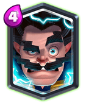

Legendary Card: Electro Wizard

The legendary card at the #1 spot is, as you have already guessesd, is Electro Wizard!!!
Still defending his title since last ‘Best Legendary List”, Electro Wizard is quite strong now.
The 2% HP nerf changes only one interaction that now Mini P.E.K.K.A. will one shot it but its rather not that important change to him cause Mini P.E.K.K.A. will nearly always used to kill the tank rather than support.
Electro Wizard can decently defend against the other legendary cards along with the help of Crown Tower to varying extent. The usage of Inferno Tower is gonna increase due to less Night Witch and her bats to distract and Zap becoming a bit less popular eWiz and Lightning are gonna be more popular.
He is great with meta tanks, MK and P.E.K.K.A. as it can kill of their counter, Inferno Dragon. He can even counter MK when used along with a mini-tank like Ice Golem.
Great glass cannon, great support, spawn damage, forked attacked, stun effect, ability to survive Fireball…what more can you ask for 4 elixir. (Though I still think giving him the ability to stop the Log midway through its roll will be super cool XD).